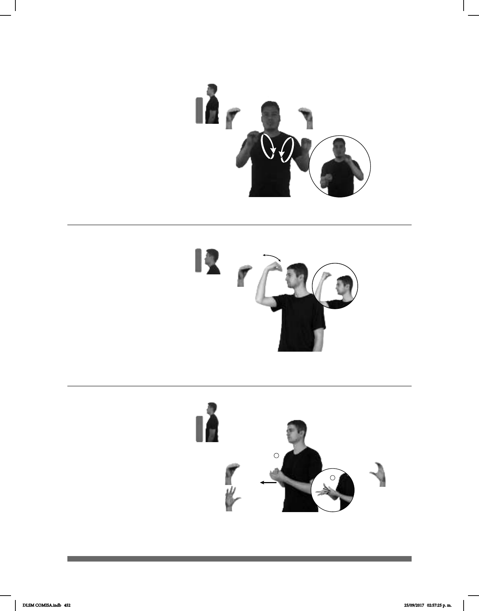

452
Seña: SB
MD y MB O.5
MD y MB palmas hacia
abajo.
MD y MB a la altura del
pecho.
Movimiento: MD y MB se mueven
formando círculos alternadamente
Ceño fruncido, ojos
semicerrados, la punta de la lengua fuera.
sust. Circunstancia que
de su comportamiento y que en realidad
no existió o no tuvo que ver con lo que
hizo.
Pretexto – Excusa (B) (O-73)
pro-TÚ PRETEXTO SIEMPRE MISMO++
Tú siempre dices pretextos.
Seña: SM
O.5
Palma hacia adentro.
A la altura de la frente.
Movimiento: La mano se mueve
sòlo la muñeca.
1. adj. y sust. Que
tiene conocimientos profundos de
algo. 2. sust. f. Conjunto de los
conocimientos profundos de la vida
y la naturaleza que permite la
comprensión general de las cosas y
de las acciones, y la elaboración de
juicios claros, generosos y
prudentes.
Sabio, bia(O-74)
__¡ !_
pos-MI ABUELO SABIO GUAU
¡Mi abuelo es muy sabio!
1
2
Seña: SB
MD seña que pasa de
O.5 a 5.2, MB C.1
MD y MB palmas hacia
arriba.
A la altura del pecho. MD
sobre MB.
Movimiento: MD recto hacia el frente.
1. v. intr. Pasar de la parte
interior de algo a la exterior o de aden-
tro hacia afuera. 2. sust. f. Acto de salir
o salirse.
(O-75)
_____________________________________neg__
HOY pro-YO NO-PODER SALIR pro-YO JUGAR
No puedo salir a jugar hoy.
DLSM COMISA.indb 452 25/09/2017 02:57:25 p. m.